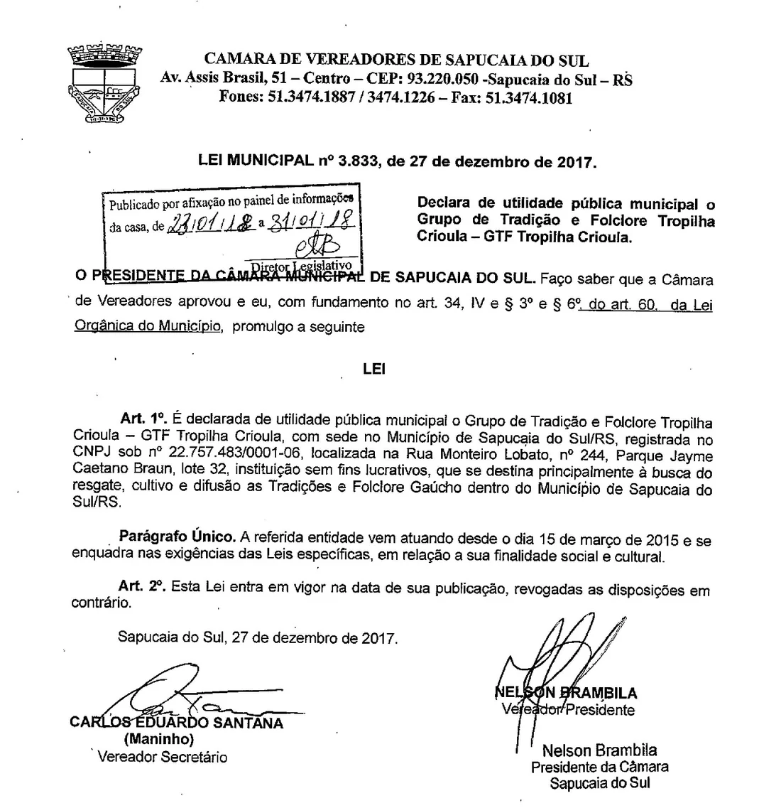
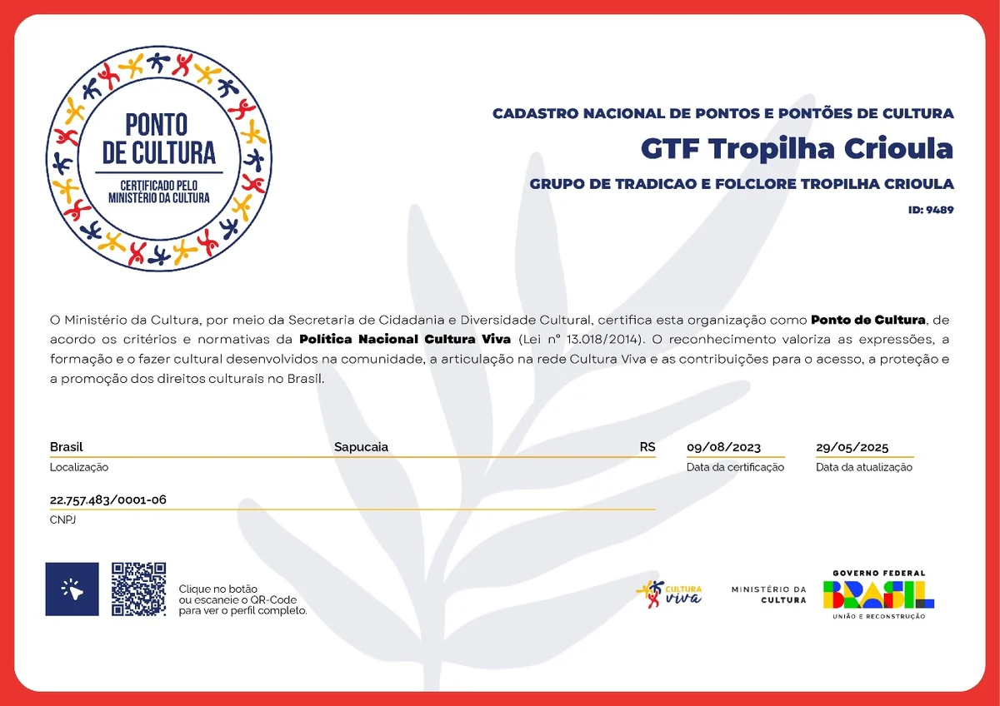

Transparência
Dados oficiais da entidade
Identificação, regularidade e títulos do GTF Tropilha Crioula.
Dados oficiais
A entidade
- Nome
- Grupo de Tradição e Folclore Tropilha Crioula (GTF Tropilha Crioula)
- CNPJ
- 22.757.483/0001-06, situação cadastral ativa
- Fundação
- 15 de março de 2015, Sapucaia do Sul/RS
- Natureza
- Associação civil sem fins lucrativos, CNAE 94.30-8-00 (defesa de direitos sociais)
- Vínculo
- 12ª Região Tradicionalista, MTG/RS, registro nº 2736/2015
- Títulos
- Ponto de Cultura Federal (ID 9489/2023); Utilidade Pública Municipal (Lei nº 3.833/2017)
- Regularidade
- Certidões negativas federais, estaduais, municipais, trabalhistas e de FGTS vigentes
- Endereço
- R. Monteiro Lobato, 244, Lote 32 · Parque Jayme Caetano Braum · Sapucaia do Sul/RS
Documentos
Títulos e reconhecimentos
- Ponto de Cultura Federal
- Certificado do Ministério da Cultura, ID 9489/2023
- Utilidade Pública Municipal
- Lei nº 3.833/2017, de Sapucaia do Sul
- Moção de Congratulações
- Câmara de Vereadores, pelos 10 anos de fundação
- Patronagens
- 2022/2023, 2023/2024 e 2024/2026 (atual), conduzida por Júnior Domingues
- Estatuto
- Finalidades de cultura, educação patrimonial e assistência social
Documentos oficiais
Cópias dos títulos
Toque na imagem para abrir em tamanho original.



